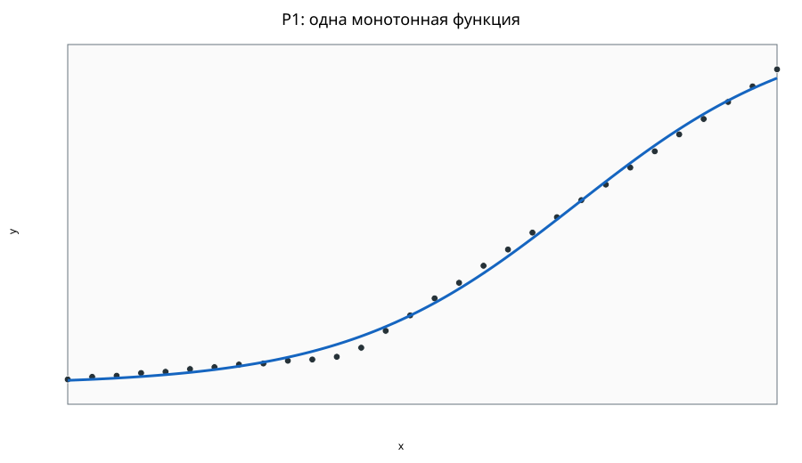
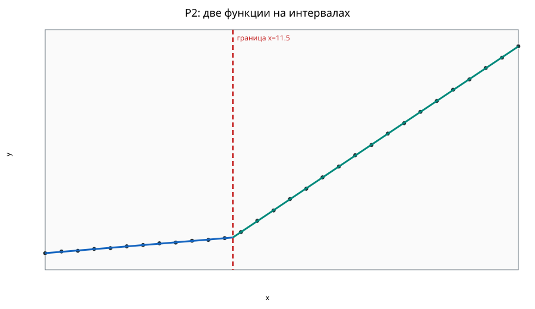

Состояние решения: CLEAR_PRACTICAL_UPLIFT.
Предупреждения: INVALID_ROWS_SKIPPED
Использовано 30 из 32 строк; пропущено 2. Уникальных x: 30.
Режим: llm_sr_typed_symbolic_search; статус: DISABLED.
Использован полный детерминированный реестр
(P1: 8, P2: 63).
Refit R²: 0.997
OOF R²: 0.996
f(x)=1.612+26.434/(1+exp(-6.139*(((x-0.000)/29.000)-0.717)))
Refit global R²: 1.000
OOF R²: 1.000
f(x)=2.009+1.675*((x-0.000)/11.500)+0.060*((x-0.000)/11.500)^2-0.017*((x-0.000)/11.500)^3 for x<=11.500; 3.727+20.969*((x-11.500)/17.500)+0.082*((x-11.500)/17.500)^2-0.060*((x-11.500)/17.500)^3 for x>11.500
| Интервал | n | доля | R² |
|---|---|---|---|
| left | 12 | 0.400 | 0.997 |
| right | 18 | 0.600 | 1.000 |


Relative MSE uplift: 0.882; bootstrap 90% interval: [0.803, 0.941].
Флаги основаны на grouped OOF-остатках рекомендуемой процедуры; они ничего не удаляют.
Больших OOF-остатков по текущему robust rule не обнаружено.